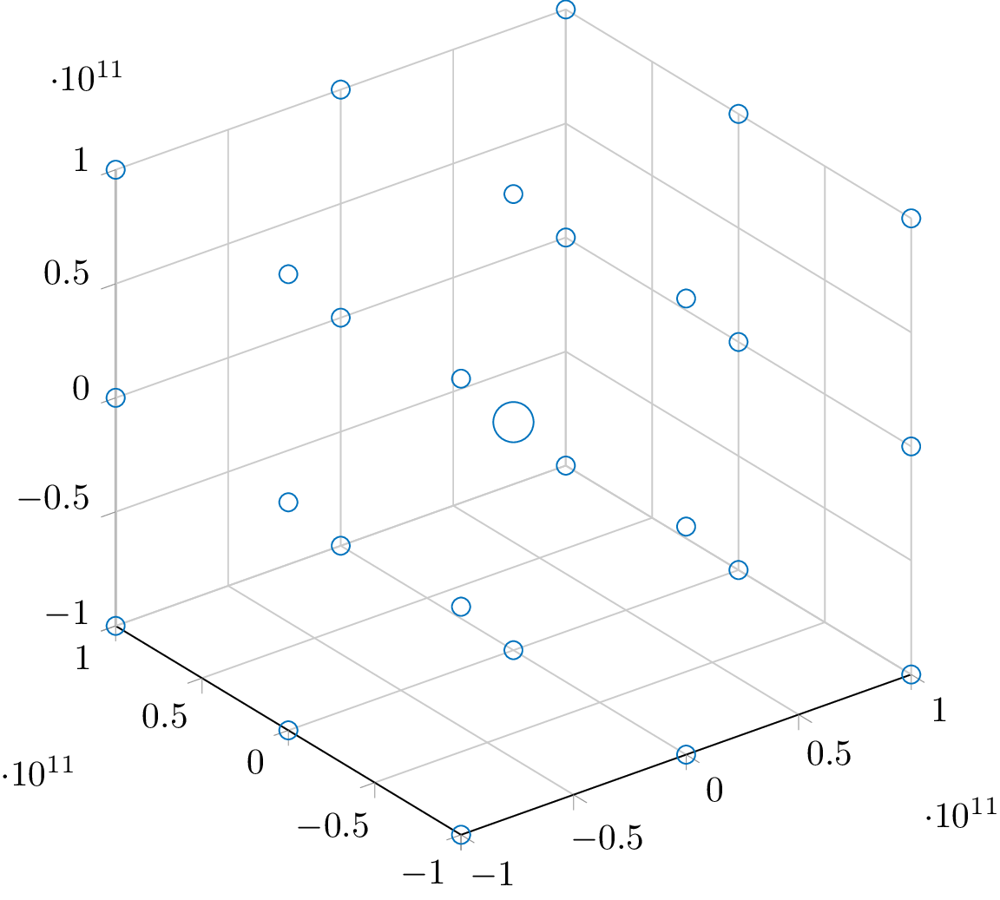

\documentclass{standalone}
\usepackage{pgfplots}
\pgfplotsset{compat=newest}
%% the following commands are needed for some matlab2tikz features
\usetikzlibrary{plotmarks}
\usetikzlibrary{arrows.meta}
\usepgfplotslibrary{patchplots}
\usepackage{grffile}
\usepackage{amsmath}
%% you may also want the following commands
%\pgfplotsset{plot coordinates/math parser=false}
%\newlength\figureheight
%\newlength\figurewidth
\definecolor{mycolor1}{rgb}{0.00000,0.44700,0.74100}
\begin{document}
\begin{tikzpicture}
\begin{axis}[%
width=3.055in,
height=3.17in,
at={(0.524in,0.428in)},
scale only axis,
xmin=-100000000000,
xmax=100000000000,
tick align=outside,
ymin=-100000000000,
ymax=100000000000,
zmin=-100000000000,
zmax=100000000000,
view={-37.5}{30},
axis background/.style={fill=white},
axis x line*=bottom,
axis y line*=left,
axis z line*=left,
xmajorgrids,
ymajorgrids,
zmajorgrids,
legend style={at={(1.03,1)}, anchor=north west, legend cell align=left, align=left, draw=white!15!black}
]
\addplot3[scatter, only marks, mark=o, color=mycolor1, mark options={}, scatter/use mapped color=mycolor1, visualization depends on={\thisrow{size} \as \perpointmarksize}, scatter/@pre marker code/.append style={/tikz/mark size=\perpointmarksize}] table[row sep=crcr]{%
x y z size\\
-100000000000 -100000000000 -100000000000 2.53722289127305\\
-100000000000 -100000000000 0 2.53722289127305\\
-100000000000 -100000000000 100000000000 2.51246890528022\\
-100000000000 0 -100000000000 2.52487623459052\\
-100000000000 0 0 2.52487623459052\\
-100000000000 0 100000000000 2.5\\
-100000000000 100000000000 -100000000000 2.51246890528022\\
-100000000000 100000000000 0 2.53722289127305\\
-100000000000 100000000000 100000000000 2.52487623459052\\
0 -100000000000 -100000000000 2.52487623459052\\
0 -100000000000 0 2.52487623459052\\
0 -100000000000 100000000000 2.51246890528022\\
0 0 -100000000000 2.51246890528022\\
0 0 0 5.59016994374947\\
0 0 100000000000 2.51246890528022\\
0 100000000000 -100000000000 2.51246890528022\\
0 100000000000 0 2.51246890528022\\
0 100000000000 100000000000 2.52487623459052\\
100000000000 -100000000000 -100000000000 2.52487623459052\\
100000000000 -100000000000 0 2.51246890528022\\
100000000000 -100000000000 100000000000 2.52487623459052\\
100000000000 0 -100000000000 2.53722289127305\\
100000000000 0 0 2.51246890528022\\
100000000000 0 100000000000 2.52487623459052\\
100000000000 100000000000 -100000000000 2.52487623459052\\
100000000000 100000000000 0 2.52487623459052\\
100000000000 100000000000 100000000000 2.51246890528022\\
};
\end{axis}
\end{tikzpicture}
\end{document}Created by David Li